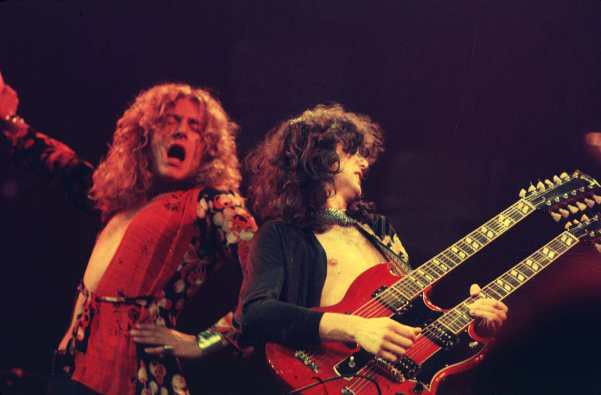
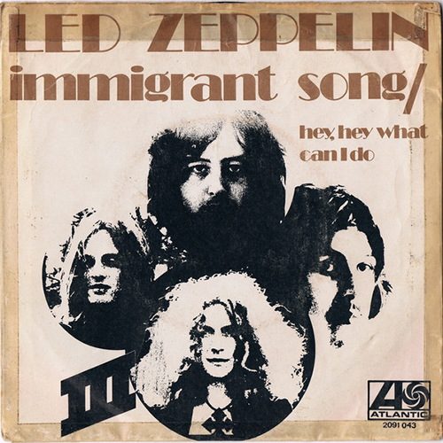
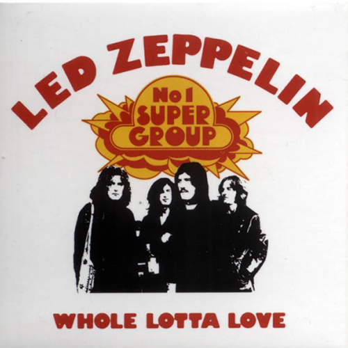
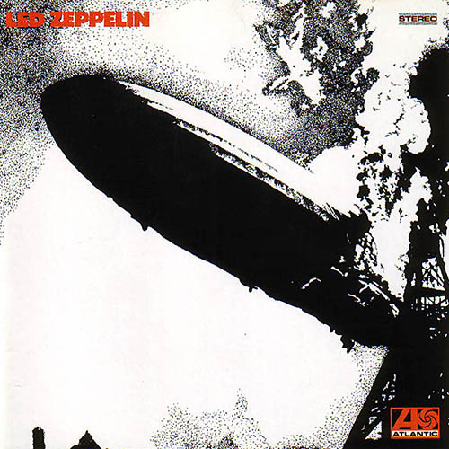

1970년대에 세계적으로 큰 인기를 끌었던 그룹.
1960년대 후반, 블루스에 기반을 둔 하드 록 열풍이 불고 있던 와중에
레드 제플린은 이를 한층 더 강화하여 헤비 메탈 이라는 장르가 발전하게 되는 데에 큰 기여를 했다.

레드 제플린은 1968년에 결성된 4인조 록밴드이다.
소위 세계 3대 기타리스트가 모두 거쳐간 것으로 유명한 역사적인 밴드인
"야드버즈"(Yardbirds)의 기타리스트였던 지미 페이지가 제프 벡 등 당시의
멤버들이 모두 떠나고 밴드가 해체되자, 자신이 리더가 되어 새 밴드를 이끌고
가기로 한 데에서 밴드의 역사가 시작된다.
해체된 지 40년이 넘은 지금도 전 세계적으로 지속적인 앨범 판매와 영향력을 과시하고 있다.
Recommended Song

Immigrant Song
1975년 10월 5일에 발매된 3집 앨범 Led Zeppelin III 의 오프닝 트랙이다.
레드 제플린의 곡중 상당히 유명한 곡중 하나로, 전형적인 호쾌한 하드록 넘버이다.
영화 토르 : 라그나로크에 나온 후 대중들에게도 유명세를 탔으며,
의외에도 스쿨 오브 락, 슈렉3 등의 영화에도 사용된 적이 있다.

Whole Lotta Love
1969년 11월 7일에 발매된 2집 앨범 Led Zeppelin II 의 오프닝 트랙이다.
2008년 북경올림픽 폐막식에서 다음 개최지인 영국을 소개하는 장면에서
지미 페이지가 등장하여 연주했던 곡이다.
2004년 롤링 스톤 선정 500대 명곡 중 75 위를 차지 하였다.

Dazed and Confused
야드버즈가 1968년에 해체된 뒤 지미 페이지를 축으로 레드 제플린이 결성되는데,
가사가 수정되는 등의 작업을 거친 스튜디오 재녹음 버젼이 데뷔 앨범인 Led Zeppelin 에
수록되면서 가장 널리 알려진 버젼이 된다.
해당 앨범에서 가장 사이키델릭한 곡 이며, 지미 페이지가 이 곡에서 사이키델릭 분위기를 더욱
강렬하게 내기 위해 바이올린 활로 기타 현을 터치해서 고래 울음소리 같은 괴이한 음향이 흘러나온다.